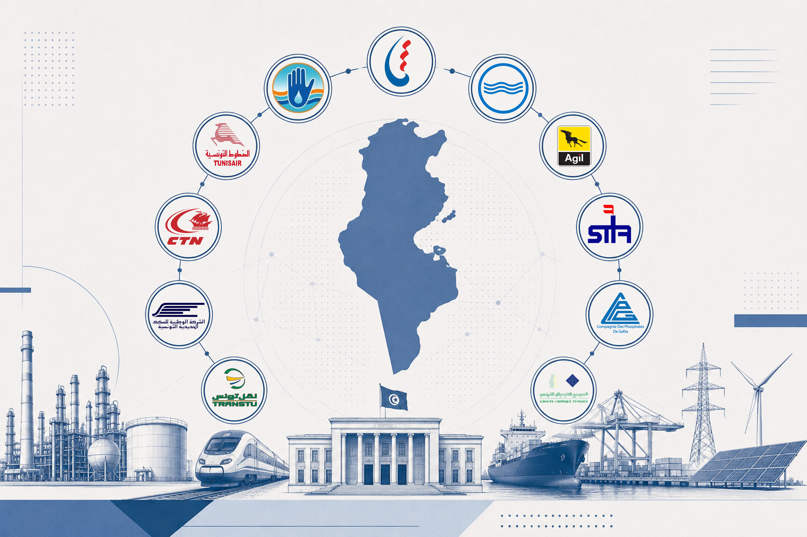

تقييم اقتصادي ومالي لإحدى عشرة مؤسسة وخيارات الإصلاح من خلال التجارب الدولية

لعبت المنشآت العمومية دورًا محوريًا في الاقتصاد التونسي منذ الاستقلال، حيث شملت قطاعات الطاقة، والمياه، والنقل، والاتصالات، والخدمات المصرفية، والصناعات الاستخراجية. تعيد هذه الدراسة تناول مسألة إصلاح المؤسسات العمومية في تونس من منظور اقتصادي، بعيدًا عن المقاربات الإيديولوجية، من خلال تقييم مختلف خيارات الإصلاح في ضوء الأدلة والتجارب الدولية. وتبدأ باستعراض الجذور التاريخية وأهداف نموذج المنشآت العمومية في تونس، ثم تقدم تشخيصًا ماليًا وتشغيليًا لإحدى عشرة منشأة عمومية حسب القطاعات، قبل وضع التجربة التونسية في سياق مقارن مع تجارب فرنسا، والمغرب، وإيطاليا، والنرويج، والاستفادة من الأدبيات الاقتصادية وتجارب إصلاح قطاعية في دول أوروبا الشرقية، والتشيلي، والمملكة المتحدة، وإيطاليا.
تقدم الدراسة تشخيصًا ماليًا وتشغيليًا لكل من الشركة التونسية للكهرباء والغاز، والشركة الوطنية لاستغلال وتوزيع المياه، والديوان الوطني للتطهير، والشركة التونسية لصناعات التكرير، وشركة عجيل، والخطوط التونسية، والشركة الوطنية للسكك الحديدية التونسية، والشركة التونسية للملاحة، وشركة فسفاط قفصة، والمجمع الكيميائي التونسي، وذلك بالاعتماد على تقرير وزارة المالية حول المنشآت العمومية، وتحليلات البنك الدولي، والتحقيقات الصحفية. وتبين النتائج أن صافي الخسائر المجمعة للمنشآت الخاسرة بلغ نحو 4.27 مليار دينار تونسي خلال سنة 2022 وحدها، ويرجع ذلك بدرجة أكبر إلى الأسعار الإدارية التي لا تغطي التكاليف الحقيقية، وتأخر الاستثمارات، وضعف استقلالية الحوكمة، أكثر من كونه ناتجًا عن ضعف الطلب.
وتخلص الدراسة إلى أن النقاش ينبغي أن يتجاوز الثنائية التقليدية بين «الخوصصة» و«الإبقاء على الملكية العمومية»، ليتجه نحو تقييم خاص بكل قطاع، يستند إلى الأدلة الاقتصادية والمقارنة مع التجارب الدولية، بهدف تحديد الخيار الإصلاحي الأنسب للسياق التونسي، سواء تمثل في إعادة الهيكلة، أو تعزيز المنافسة، أو الشراكة بين القطاعين العام والخاص، أو الخوصصة.
المؤسسات ذات النشاط الاقتصادي والخدماتي المباشر، وفق تقرير وزارة المالية حول المنشآت العمومية (الملحق عدد 09 بمشروع قانون المالية لسنة 2025)
المصدر: تقرير وزارة المالية حول المنشآت العمومية، الملحق عدد 09 بمشروع قانون المالية لسنة 2025.
مليون دينار، ما لم يُذكر خلاف ذلك · نتيجة الاستغلال، النتيجة الصافية، أعباء الأعوان، المديونية تجاه الدولة (موفى 2023)
المصدر: وزارة المالية، تقرير حول المنشآت العمومية، الملحق عدد 09 بمشروع قانون المالية لسنة 2025. بالنسبة للخطوط التونسية: رقم وزارة المالية يختلف عن القوائم المالية المدققة الخاصة بالشركة لسنة 2022 التي تفيد بخسارة صافية قدرها 282.7 مليون دينار؛ لا يوفق التقرير المصدر بين الرقمين (انظر الورقة، القسم 2.7).
مليون دينار · ترتيب تنازلي من الأكبر خسارة إلى الأصغر
المصدر: الملحق عدد 09 بمشروع قانون المالية لسنة 2025، وزارة المالية التونسية.
مليون دينار · ترتيب تنازلي من الأكبر ربحًا إلى الأصغر
المصدر: الملحق عدد 09 بمشروع قانون المالية لسنة 2025، وزارة المالية التونسية.